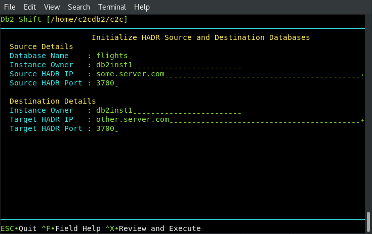

Initialize HADR between Source and Target Instance
This menu is similar to the previous one where the HADR service is setup between the source Db2 database and another Db2 instance. The Db2 database on the target system must have been created with one of the following settings during the shift step.
Syntax: --hadr

The panel requires the following information:
- The source database name and server
- The destination server details
The syntax for initiating the HADR connection between two Db2 servers is:
db2shift
Required Options
--mode=hadr_setup
--dest-type=OTHER
--ssh
--source-dbname=flights
--source-hadr-host=some.server.com
--source-hadr-port=3700
--dest-server=db2inst1@other.server.com
--dest-hadr-host=oc.server.com
--dest-hadr-port=3700
The panel that provides this capability:

Mode Option
Syntax: --mode=hadr_setup
The HADR option is used to initialize and start HADR between a source and target server. This step
would be run after the database has been shifted to the new location. This option is
not used for the initial HADR setup of the target system. The target database must be
created with the --hadr option in order for it be placed into the correct mode for
HADR communication. The --hadr is enabled for pods with the HADR option in the menu.
Target Client (Instance to Instance)
Syntax: --ssh
The client for a deploy (clone) operation must be supplied as part of the Db2 Shift command.
If the target is a remote Db2 instance (--ssh), Db2 Shift expects that a passwordless
ssh environment has been established between the source and target servers.
Source Database
Syntax: --source-database=""

The source database is the name of the database that you want to setup HADR with on the source and destination servers. Note that the database name must be same at the both locations.
Destination Server (Instance)
Syntax: --dest-server=userid@ip.address

For destinations that are traditional Db2 instances, you must provide the userid and the IP address or symbolic name of the destination server. You only use an IP address for shifting into a traditional Db2 instance.
The format of the parameter is userid@address when using the Db2 Shift command line. When using the
UI, this field is generated automatically by combining the destination instance owner name with the
destination server address.
When connecting to a remote instance, the Db2 Shift program
expects that a passwordless ssh environment has been established between the
source and target servers. The --ssh flag must be used in conjunction with this
parameter.
HADR Source and Destination Server
Syntax: --source-hadr-server="", --dest-hadr-server=""

For HADR setup, the Db2 Shift command requires the IP or symbolic name of the source and destination server that will be used in an HADR setup.
HADR ports
Syntax: --source-hadr-port=#, --dest-hadr-port=#


HADR communicates over a port which is different than the Db2 instance. You must supply the source and destination port numbers that Db2 will communicate between the HADR servers. The default port number is 3700 for HADR communications, but verify the value. The target port number will also be required.